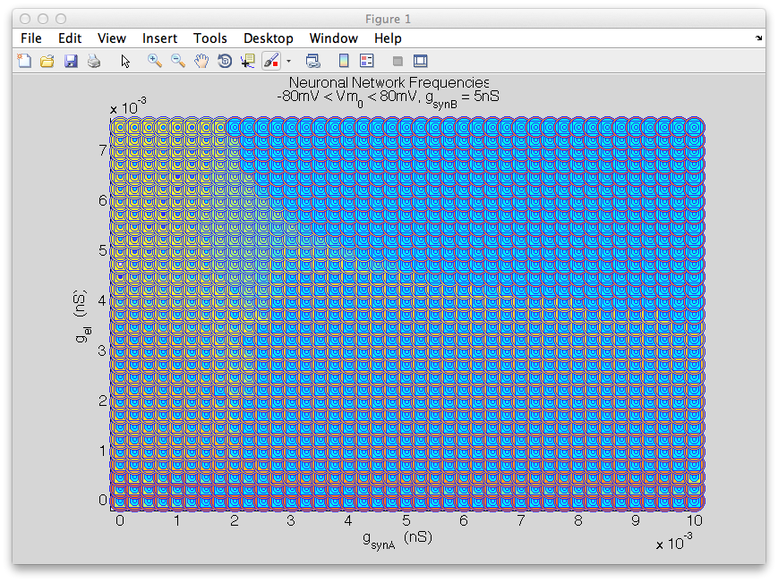

This is the readme for the model associated with the paper: Gutierrez GJ, O'Leary T, Marder E (2013) Multiple mechanisms switch an electrically coupled, synaptically inhibited neuron between competing rhythmic oscillators. Neuron 77:845-58 This matlab model code was contributed by Dr G. Gutierrez. Instructions: First run gsynA_gel_circuit_sim_ode45.m (on a 2013 MacBook Pro laptop it took 2 hours 23 minutes), then ParameterscapeFreqPlot.m which should produce a figure like the paper Figure 5 top: 